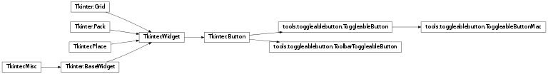

ToggleableButton¶
Classess which wrap the Tkinter Button object and simulates the toggled button you commonly see in draw, magnify, etc. buttons. Keeps a static container of toggleable buttons to only allow one button at any time to be toggled.

Button wrapper which simulates the toggled button as you see in the draw, magnify, etc. buttons. Interally keeps a bind map which on toggle binds the keys in the map, and unbinds them on untoggle or forced untoggle.
Parameters: - root – Root of the program, which handles the cursor
- canvas – The matplotlib Tkinter canvas to connect binds to
- master – The location to draw the button to
- cnf – Button forwarded args
- **kw – Button forwarded args
Allows the binding of keys to certain functions. These bindings will become active once the button is in a toggled state. latch can be called multiple times and keeps an internal bindmap.
Parameters:
The method bound to the button, Toggle will internally bind the inputed keys when toggled, and unbind them accordingly. Also keeps track of all toggled button via a static container and ensures only one button can be toggled at any time
Forcefully untoggles the button. Used when ensuring only one button in the global container is active at any time
GUI button used to implement the backend matplotlib plot functions. Instead of placing more overhead in the ToggleableButton another class is created since the number of matplotlib functions will remain constant, while we may continue creating new tools that use ToggleableButton
Parameters: - root – Root of the program, or the location of the cursor to be changed
- master – Location of the button to be drawn to
- func – Function to be called each time the button is ‘toggled’
- cnf – Button forwarded args
- **kw – Button forwarded args
Set the internal cursor variable to the cursor to be used when the button is in a toggled state
Parameters: cursor (str) – A valid Tkinter cursor string
Calls the passed function
funcand manages a toggle state below. Ensures only one toggled button is active at any time and the button is correctly raised/sunk
Forcefully untoggles the button and invokes
func. Used when ensuring only one button in the global container is active at any time